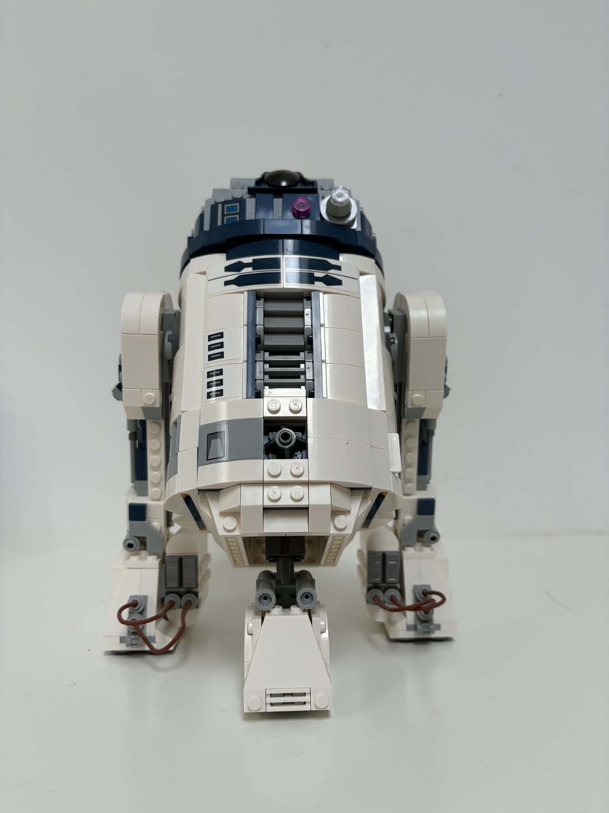
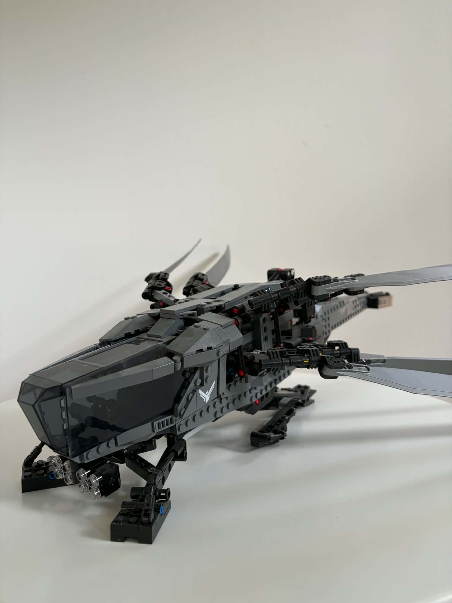

Hi, my name is Rasmus Gramkow Kristensen
About me
I am currently in my first semester of the bachelor’s degree in IT Architecture at Business Academy Copenhagen EK. I have a strong interest in computers, technology and gaming. I also enjoy building LEGO in my spare time.
Education
I attended Engelsborgskolen for primary school, before completing 10th grade at Bagsværd Kostskole. After that, I attended Virum Gymnasium, where I studied Social Sciences and English. I am now studying IT Architecture at Business Academy Copenhagen and am currently in my first semester.
Work experience
I have gained work experience from several different roles. I have worked as a store assistant at Rema 1000 as an on-call assistant at Møllegården retirement home, and as a warehouse assistant at Hænning Stæhr. These jobs have given me experience working in different environments and with different types of responsibilities.
Projects

Hobbies
In my spare time I enjoy playing video games and building LEGO.
-

-
